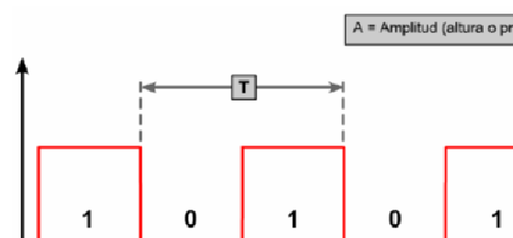

Prueba del cable: Ondas rectangulares
Ondas rectangulares representan a las ondas digitales. Las ondas rectangulares, al igual que las ondas sinoidales, son periódicas. Sin embargo, los gráficos de las ondas rectangulares no varían continuamente en el tiempo. La onda conserva un valor durante un tiempo, y luego cambia repentinamente a otro valor. Este valor se conserva durante cierto tiempo, y luego cambia rápidamente de vuelta a su valor original. Las ondas rectangulares representan señales digitales, o pulsos. Como ocurre con todas las ondas, las ondas rectangulares se pueden describir en función de su amplitud, período y frecuencia.
-
Pulsos separados (No contínuos)
-
Solo puede tener uno de dos estados (1/0 - Encendido/Apagado)
-
Variaciones de voltaje entre niveles

BÚSQUEDAS RELACIONADAS
Ondas
Decibelios
Visualización de señales en tiempo y frecuencia